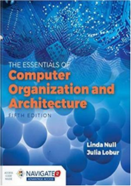
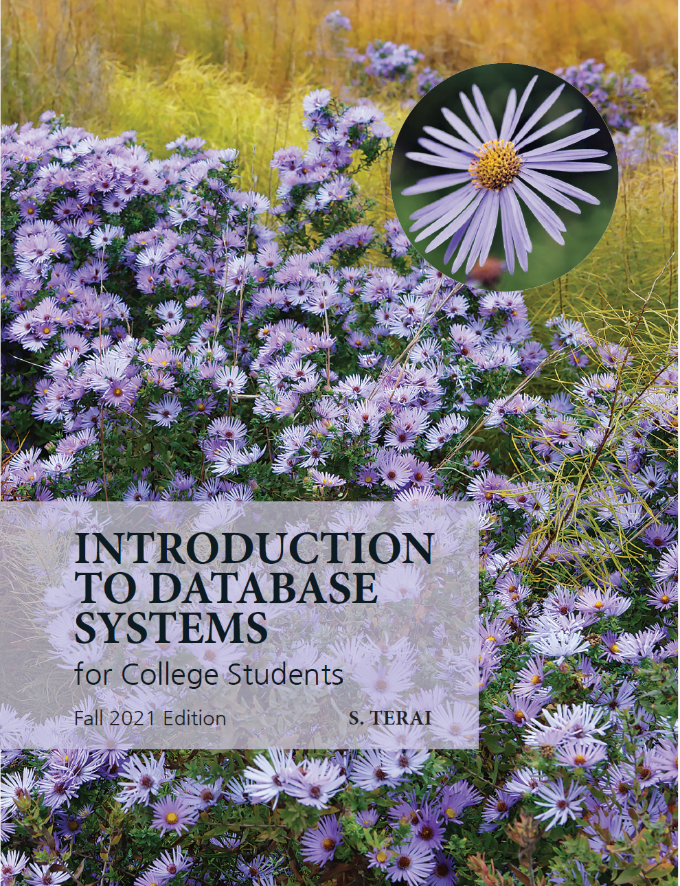
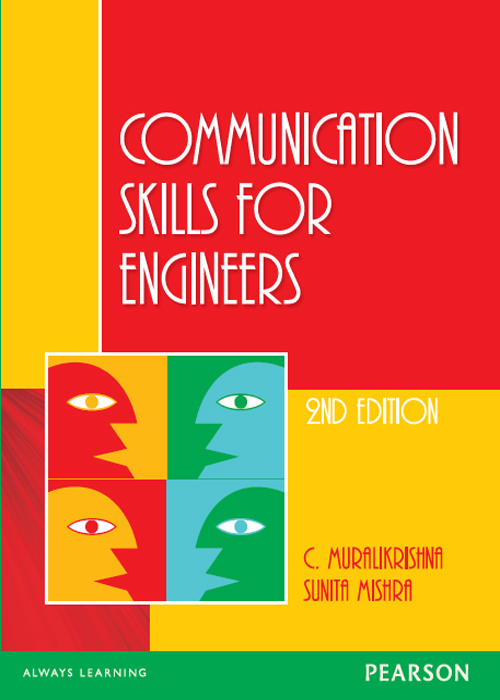
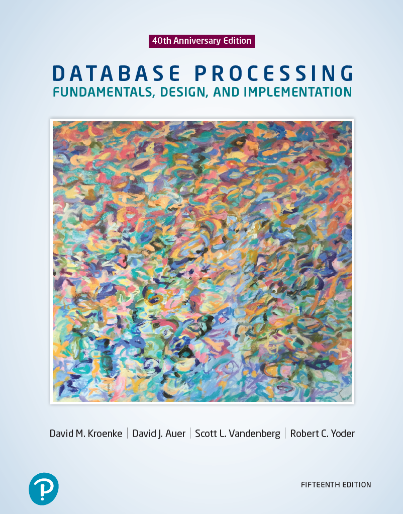
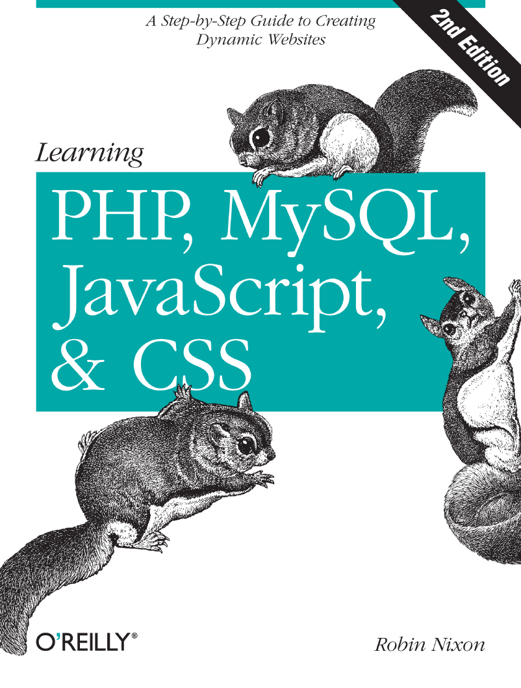
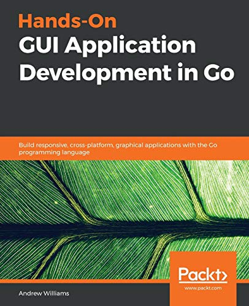

This page will include an information about your curriculum. List of the whole courses that you should finished so far.
| Cover | Title | Course Code | Level | Description |
|---|---|---|---|---|
|  | Computer Essentials | CST8101 | Level1 | The essentials of computer software, hardware, and laptop management form the foundation for building further technical programming skills. |
 |
Introduction to Computer Programming | CST8116 | Level1 | Possessing the fundamentals of logic, problem-solving and programming language structure provides a solid foundation for further study in the field. |
|  | Introduction to Database | CST8215 | Level1 | Students learn the fundamentals of Relational Databases design using Entity Relation diagrams, and use SQL to create, modify and query a database. |
| Achieving Success in Changing Environments | CST8300 | Level1 | Rapid changes in technology have created personal and employment choices that challenge each of us to find our place as contributing citizens in the emerging society. | |
|  | Communications I | ENL1813T | Level1 | Communication remains an essential skill sought by employers, regardless of discipline or field of study. |
|  | Database Systems | CST2355 | Level2 | Students acquire practical experience using market-leading object-relational database management systems like Oracle and MySQL. |
| Operating System Fundamentals (Gnu/Linux) | CST8102 | Level2 | Learn the basic concepts and components of Operating Systems (OS), and how they function and interact with hardware and software components. | |
|
Object Oriented Programming (Java) | CST8284 | Level2 | Learn object oriented programming methodology using the Java programming language. |
|  | Web Programming | CST8285 | Level2 | Learn the basics of web programming, website design and implementation. JavaScript, HTML5, and PHP are used to explore web-based solutions to problems of increasing interactivity and complexity. |
| Technical Communication for Engineering Technologies | ENL2019T | Level2 | The ability to communicate effectively in a technically-oriented interdisciplinary workplace is a foundational skill in an innovation-driven economy. | |
 |
Systems Analysis and Design | CST2234 | Level3 | Guided by industry standard software engineering methodologies, students gain hands-on experience with case studies used to develop systems from inception through elaboration, construction and transition phases. |
|  | Mobile Graphical Interface Programming | CST2335 | Level3 | Students explore graphical user interface programming in a mobile Android environment. |
| Network Programming | CST8109 | Level3 | Software programming in today's environment requires detailed knowledge of the underlying network topology, its implementation and programming support functions. | |
|
Object Oriented Programming with Design Patterns | CST8288 | Level3 | Implement the best practices of object oriented program development with software design patterns. |
| Business Intelligence and Data Analytics | CST8390 | Level3 | Business Intelligence (BI) can be broadly defined as a set of applications, infrastructure, and best practices that integrate and transform raw data into actionable information used for planning, monitoring and analyzing processes. | |
| Advanced Database Topics | CST8276 | Level4 | Teams and individuals explore advanced database topics: database administration (using Oracle), data governance, globalization, security and advances in database technology. | |
| Enterprise Application Programming | CST8277 | Level4 | With a focus on the IT Enterprise, students are introduced to the application enterprise environment using and extending the technologies learned in previous courses. | |
| Programming Language Research Project | CST8333 | Level4 | Learning a new programming language or framework on your own is a challenge faced by programmers on the job as part of their career. | |
| Software Development Project | CST8334 | Level4 | Following the agile software engineering methodology, teams work with clients to analyze business needs, determine computer system requirements, model system designs, build prototypes, test code and deliver final products. |